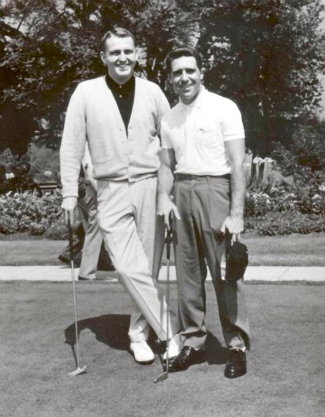

For you
Following
globe_asia
Everyone can reply
______________________________________________________________________________
image
gif
ballot
sentiment_satisfied
calendar_month
pin_drop
flag_2
assistant_navigation
Show 492 Posts
Priyansh
verified
@itspriionly . 39m
assistant_navigation
more_horiz
All Paid Courses (Free for First 4500 People)
Paid Course FREE (PART-1)
- 1. Artificial Intelligence
- 2. Machine Learning
- 3. Prompt Engineering
- 4. Claude,Chatgpt,Grok
- 5. Data Analytics
- 6. AWS Certified
- 7. Data Science
- 8. BIG DATA
- 9. Python
- 10.Ethical Hacking
Show more

chat_bubble
1k
repeat
1k
Favorite
1k
bar_chart
1k

Pypiyush
verified
@itspiionly .9m
assistant_navigation
more_horiz
Living legend :-
chat_bubble
1.5k
repeat
2k
Favorite
1.8k
bar_chart
1k
GARY_PLAYER
verified
@garyplayer .50m
assistant_navigation
more_horiz
Mark McCormack, a genius ahead of his time. No telling where
professional golf would be today without this man. Forever grateful for his mentorship and guidance.
GP

chat_bubble
1.5k
repeat
2k
Favorite
1.8k
bar_chart
1k

Sheel Mohnot
verified
@pitdesi .40m
assistant_navigation
more_horiz
Sometimes I’m in the mood for Dolores park so I ask chat what
is the most like Dolores park in whatever city I’m in

chat_bubble
1.5k
repeat
2k
Favorite
1.8k
bar_chart
1k

yatshitcray
verified
@yatshitcray . 15h
assistant_navigation
more_horiz
Damn ... we actually did it
Thank you to
@jgebbia
for entrusting me with helping lead this effort, and
@skupor
for your continued support and leadership.
So proud of everyone who made this possible

chat_bubble
1.3k
repeat
2.5k
Favorite
1k
bar_chart
1.5k
Subscribe to Premium
Get rid of ads, see your analytics, boost your replies and unlock 20+ features.
Subscribe
How to follow
- Reed add Follow
- Ryan Hoover add Follow
- Patrick... add Follow
Show More
Whats Happening
Trending in India
#Orry
40.2k Posts
Trending in India
#Harry
40.2k Posts
Trending in India
#Sigma Course
40.2k Posts
Trending in India
#CodeWithHarry
40.2k Posts
Show More